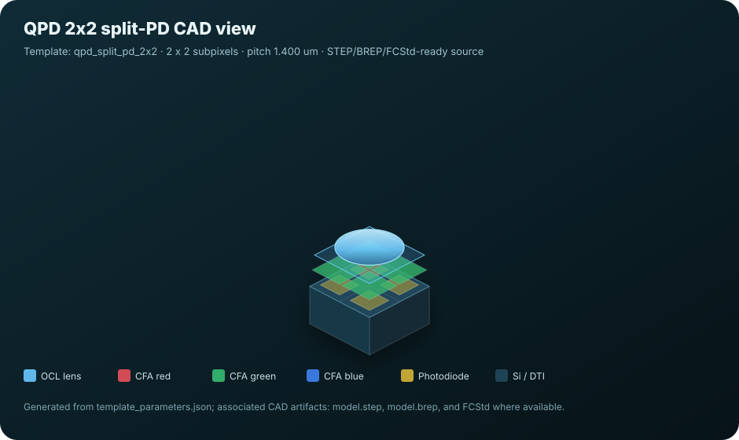
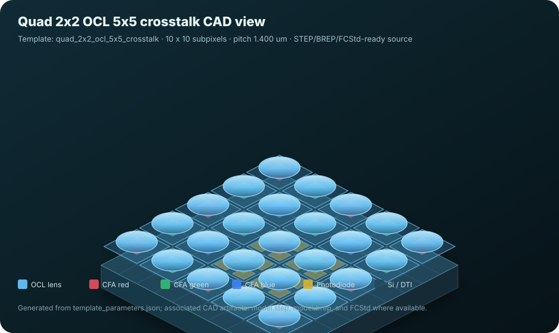
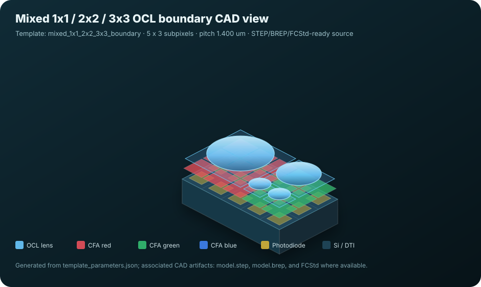
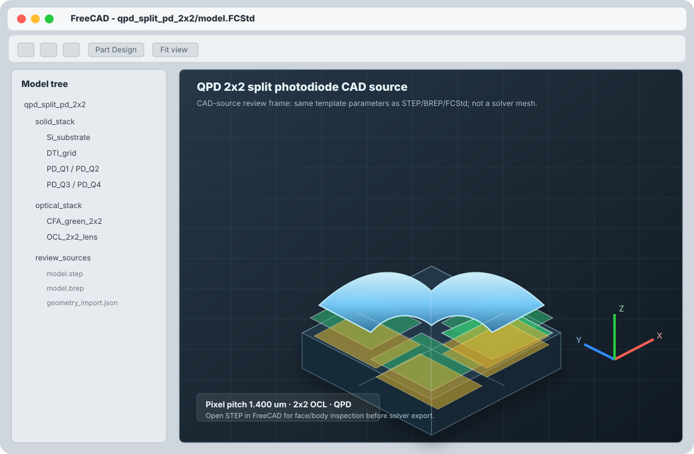
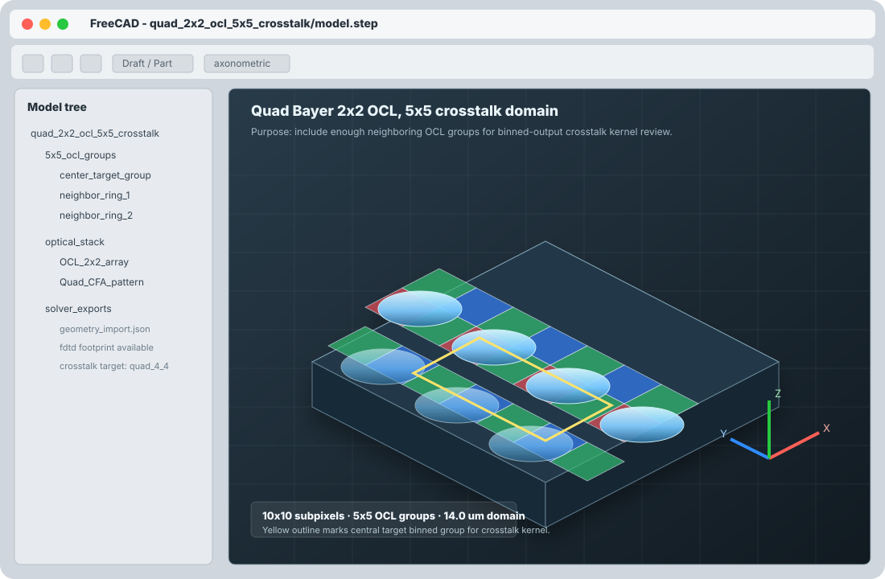
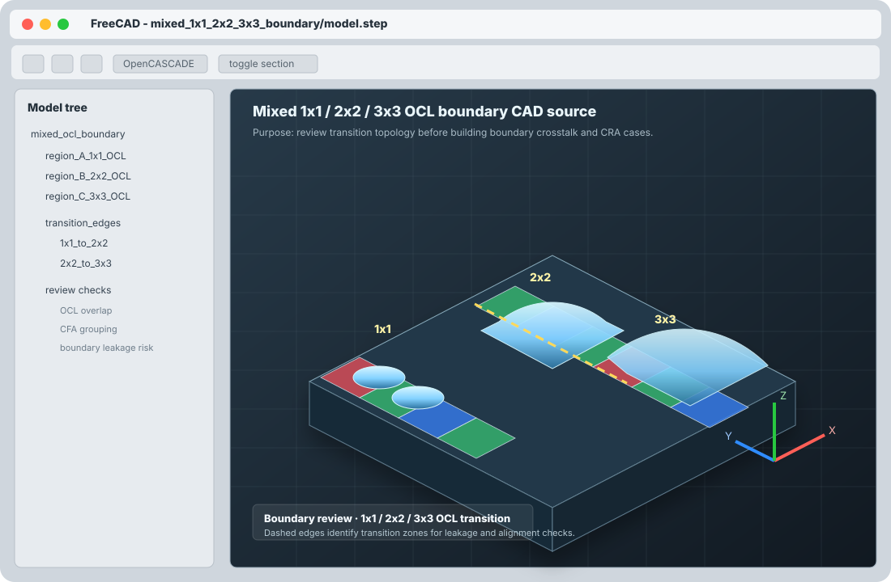

Template 기반 Pixel 설계 분석 시스템
이 문서는 현재 개발 중인 image sensor pixel workbench를 설계자 관점에서 검토하기 위한 standalone HTML입니다. 목적은 “어떤 설계 의사결정에 도움이 되는가”, “어떤 결과를 아직 믿으면 안 되는가”, “다음 개발 우선순위가 맞는가”에 대한 실무 피드백을 받는 것입니다.
현재 상태 요약
이 시스템은 “정확도 보장 TCAD/FDTD 제품 도구”가 아니라, CAD template 기반으로 설계 후보를 빠르게 만들고 광학/전기 진단/카메라 export 흐름을 검증하는 open-source research workbench입니다.
Geometry Authority
Template이 geometry source입니다. topology 변경은 base template, height/thickness/pitch 같은 scalar 변경은 variant로 관리합니다.
Solver Path
Meep FDTD가 optical response, CRA, crosstalk, OCL/CFA 효과를 계산합니다. DEVSIM은 현재 electrical sanity/proxy 진단입니다.
Output
KPI, charts, case command, solver input, camera-system research export를 JSON/CSV/PNG로 남깁니다.
Accuracy Gate
Measured geometry, measured n,k, calibrated implant/device, convergence PASS 전까지 product LUT로 쓰면 안 됩니다.
사용하는 Open-Source 구성요소
목표는 상용 image-sensor workflow와 유사한 설계/분석 흐름을 open-source solver와 CAD/mesh 도구로 재현하는 것입니다.
| Tool | 역할 | 현재 사용 방식 | 검토 포인트 |
|---|---|---|---|
| Meep | FDTD optical simulation | Microlens/OCL, CFA, CRA, crosstalk kernel, field response, generation map 계열 계산. | Convergence, mesh resolution, material n,k, runtime scaling. |
| DEVSIM | Device/electrical diagnostics | Weighting potential, split-PD/QPD proxy, DD smoke, mesh/contact sanity check. | Pinned PD, TG, FD, implants, traps, calibrated mobility/recombination 구현 필요. |
| FreeCAD | CAD review / edit loop | Generated STEP/BREP/FCStd template를 열어 3D geometry를 검토하고 working copy를 만드는 경로. | 설계자가 실제로 CAD에서 수정할 parameter와 topology 경계 정의. |
| Gmsh / OpenCASCADE | Parametric CAD and mesh | Template geometry 생성, coarse CAD review mesh, TCAD bridge mesh 준비. | Solver-native mesh와 visualization mesh를 명확히 구분해야 함. |
| Python stack | Pipeline / analysis | NumPy, SciPy, CSV/JSON, Matplotlib, replay/validation scripts로 solver artifact를 처리. | Reproducibility, artifact schema, batch/HPC orchestration. |
| React / Vite / Playwright | Workbench UX and test | Design, condition, simulate, analyze UI와 browser functional test를 구성. | 설계자가 이해하기 쉬운 UX 단순화와 result viewer 품질. |
3D CAD / FreeCAD Review Views
아래 이미지는 현재 CAD template의 STEP/BREP/FCStd source와 동일한 template parameter에서 생성한 3D isometric preview입니다. FreeCAD가 설치된 환경에서는 같은 template 폴더의 model.step, model.brep, model.FCStd를 열어 실제 CAD body를 검토합니다.

QPD 2x2 Split-PD
FreeCAD-openable qpd_split_pd_2x2/model.step source. QPD split, green CFA, shield proxy 검토용.

Quad 2x2 OCL 5x5 Domain
quad_2x2_ocl_5x5_crosstalk/model.step 기반. 중앙 2x2 OCL group과 주변 ring을 포함한 crosstalk domain.

Mixed OCL Boundary
mixed_1x1_2x2_3x3_boundary/model.step 기반. 1x1, 2x2, 3x3 OCL transition leakage 검토용.
FreeCAD review image 목적: 설계자 리뷰에서는 CAD source가 실제로 어떤 body/tree/viewport로 보이는지가 중요합니다. 아래 snapshot은 FreeCAD viewport 형태로 만든 CAD-source review frame이며, 각 template의 model.step/model.FCStd와 같은 parameter를 기준으로 합니다. 실제 FreeCAD가 설치된 workstation에서는 이 frame을 실제 앱 캡처로 교체할 수 있습니다.

FreeCAD View: QPD Split-PD
Source folder: runs/pixel_cad_template_library_reference/qpd_split_pd_2x2. Q1-Q4 split, PD, CFA/OCL body 구성을 설계자가 확인하는 장면.

FreeCAD View: 5x5 Crosstalk Domain
Source folder: runs/pixel_cad_template_library_reference/quad_2x2_ocl_5x5_crosstalk. 중앙 2x2 OCL과 주변 5x5 group extent 확인용.

FreeCAD View: Mixed OCL Boundary
Source folder: runs/pixel_cad_template_library_reference/mixed_1x1_2x2_3x3_boundary. 1x1/2x2/3x3 OCL transition 영역의 CAD review image.
Pipeline
설계자는 template과 조건을 정의하고, backend가 solver input과 artifact를 생성합니다. 모든 실행은 command와 결과 파일을 남겨 재현성을 확인합니다.
Template 선택
Bayer, Quad, Nona, QPD, mixed OCL boundary 등 base topology 선택.
CAD / Geometry
STEP/BREP, geometry_import.json, optional mesh, FreeCAD review artifact 생성.
Variant 정의
Pitch, lens height, CFA thickness, passivation, DTI 등 parameter override.
Condition
Wavelength, color, CRA, field anchor, readout/split mode, OCL/CFA alignment.
Meep FDTD
OCL/CFA/stack optical response, focal behavior, CRA roll-off, crosstalk kernel.
Electrical Diagnostics
DEVSIM/Gmsh mesh import, split-PD/QPD weighting, DD smoke, sanity checks.
KPI / Charts
QE proxy, edge-center ratio, crosstalk heatmap, PDAF phase/balance, gates.
Camera Export
Research/trend CSV/JSON package for camera-system simulation ingestion.
분석 가능 영역
현재 의미 있게 볼 수 있는 것은 “상대 비교와 경향”입니다. 실측 stack/material/device calibration이 없는 절대 정확도 판단은 제외해야 합니다.
Pattern / OCL Topology
1x1 Bayer, 2x2 Quad OCL, 3x3 Nona OCL, mixed OCL boundary, QPD split template 비교.
CRA / Field Response
Center, edge, diagonal field anchor에서 response roll-off와 focal spot displacement 확인.
Crosstalk Kernel
1x1은 3x3 neighborhood, 2x2 OCL은 5x5 OCL-group domain으로 output kernel과 truncation risk 확인.
PDAF / Split Pixel
Dual-PD X/Z, QPD 2x2, shield/no-shield control의 phase/balance proxy 확인.
Material / Stack Sensitivity
CFA thickness, OCL index, passivation, Si thickness 등의 sweep과 tornado-style 민감도 정리.
Traceability / Replay
각 case의 solver_case.json, case_command.json, KPI artifact로 재현과 비교를 추적.
Existing Sensor Reference Track
TechInsights 등에서 사용자가 보유/라이선스한 sensor teardown/reference 정보를 구조화해 기존 sensor CAD template와 simulation case로 변환하는 track을 계획합니다.
핵심 Template 구분
중요한 점은 layout review용 template과 crosstalk kernel용 simulation domain을 혼동하지 않는 것입니다.
| Template | 용도 | Domain | 현재 판단 |
|---|---|---|---|
bayer_1x1_3x3 |
1x1 Bayer 기준 pixel 및 8-neighbor crosstalk | 3 x 3 subpixels | research baseline |
quad_2x2_ocl |
Quad 2x2 OCL compact layout review | 4 x 4 subpixels = 2 x 2 OCL groups | crosstalk domain insufficient |
quad_2x2_ocl_3x3_neighborhood |
중앙 2x2 OCL group + 8 neighbor 최소 kernel | 6 x 6 subpixels = 3 x 3 OCL groups | minimum kernel |
quad_2x2_ocl_5x5_crosstalk |
High-CRA/long-range leakage truncation 확인 | 10 x 10 subpixels = 5 x 5 OCL groups | practical kernel domain |
qpd_split_pd_2x2 |
QPD 2x2 split photodiode + shield proxy | 2 x 2 subpixels, quad split | PDAF proxy |
mixed_1x1_2x2_3x3_boundary |
OCL topology transition boundary risk | mixed finite layout | boundary study |
KPI / Chart Output
결과는 설계 판단에 필요한 artifact 단위로 남기되, product-ready 여부는 별도 gate로 막습니다.
주요 KPI
주요 Chart
한계와 사용 금지선
아래 항목은 설계자에게 반드시 보여줘야 하는 제한입니다. 이 제한을 숨기면 시스템 개발 방향이 잘못 잡힐 수 있습니다.
Measured stack geometry와 measured n,k가 없으므로 현재 결과는 제품 정확도 LUT가 아닙니다.
TG, FD, pinned PD implant, interface trap, BDTI/DTI physics는 아직 calibrated production TCAD 수준이 아닙니다.
DEVSIM은 현재 weighting/DD smoke와 mesh/contact sanity에 유용하지만, full readout circuit/transfer dynamics까지 포함한 모델은 아닙니다.
빠른 smoke resolution은 workflow 검증용입니다. grid/convergence gate가 CHECK/FAIL이면 설계 sign-off 근거로 쓰면 안 됩니다.
큰 10x10 2x2 OCL crosstalk domain은 OCL geometry를 CAD import로 쓰고, CFA는 procedural pattern을 사용합니다. 모든 CFA cell polygon을 import하면 material function 제한을 넘습니다.
Camera-system export는 구조와 trend를 검증하기 위한 package입니다. `product_lut_ready=false`가 정상입니다.
TechInsights 기반 sensor 정보는 라이선스된 내부 reference 또는 사용자가 제공한 수치 parameter로 사용해야 하며, 원문 이미지/표를 HTML이나 repo에 재배포하면 안 됩니다. 파생 parameter와 provenance만 관리해야 합니다.
설계자에게 받고 싶은 조언
아래 질문에 대한 답이 다음 개발 우선순위를 정합니다.
설계 workflow
Template 기반 방식이 실제 pixel 설계 초기 검토에 자연스러운가? 아니면 GDS/STEP import가 더 우선인가?
Topology coverage
1x1, 2x2 OCL, 3x3 OCL, QPD, shield PDAF 외에 반드시 필요한 pixel/OCL topology는 무엇인가?
Crosstalk domain
2x2 OCL crosstalk에서 5x5 OCL group이면 충분한가? High CRA 조건에서 7x7 이상이 필요한가?
KPI priority
Camera simulation용으로 가장 먼저 필요한 output은 field response, crosstalk kernel, PDAF phase, tolerance envelope 중 무엇인가?
Calibration target
실측이 가능해졌을 때 가장 현실적인 calibration target은 QE spectrum, CRA roll-off, PRNU/shading, crosstalk, PDAF curve 중 무엇인가?
UX decision gate
PASS/CHECK/FAIL label이 충분한가? 설계자가 실제로 신뢰하려면 어떤 provenance와 report가 더 필요한가?
Existing sensor benchmark
TechInsights 기반으로 먼저 CAD화해 비교하면 좋은 기존 sensor 또는 pixel family는 무엇인가?
제안하는 다음 개발 우선순위
현재 구현을 더 실무적으로 만들기 위한 후보입니다. 설계자 피드백으로 우선순위를 조정해야 합니다.
| Priority | Item | Why it matters | Decision needed |
|---|---|---|---|
| P0 | GDS/STEP import workflow 정리 | Template 가정이 실제 layout과 다를 때 신뢰가 급격히 떨어짐. | 설계자가 주로 제공 가능한 원본 format은? |
| P0 | Measured stack/n,k import schema | 제품 정확도 gate의 첫 번째 blocker. | 사내/외부 측정값을 어떤 형태로 받을 수 있는가? |
| P0 | Existing sensor CAD database | TechInsights 등 teardown/reference 기반으로 기존 sensor를 template CAD화하면 설계자 리뷰와 benchmark가 훨씬 쉬워짐. | 사용 가능한 sensor list, 공개/라이선스 범위, 추출 가능한 stack/geometry field는? |
| P1 | Convergence tiers 자동화 | Smoke와 design trend, quantitative evidence를 분리해야 함. | 실무자가 기다릴 수 있는 runtime budget은? |
| P1 | 5x5/7x7 crosstalk 비교 | Camera kernel truncation risk를 정량화해야 함. | 어느 field/CRA/wavelength 조건을 anchor로 둘 것인가? |
| P2 | Electrical calibration track | DEVSIM을 proxy에서 calibrated device model로 올리는 경로. | TG/FD/implant/interface trap 정보 접근 가능성은? |
Feedback Form
Standalone HTML이라 서버 전송은 하지 않습니다. 브라우저 localStorage에 임시 저장하고, JSON으로 복사/다운로드할 수 있습니다.